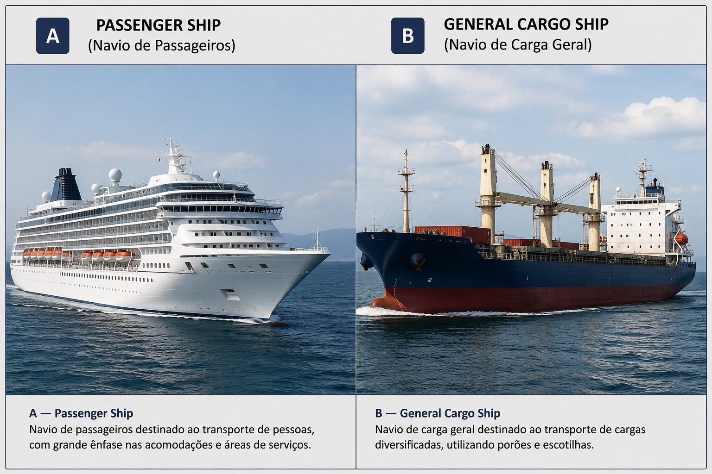
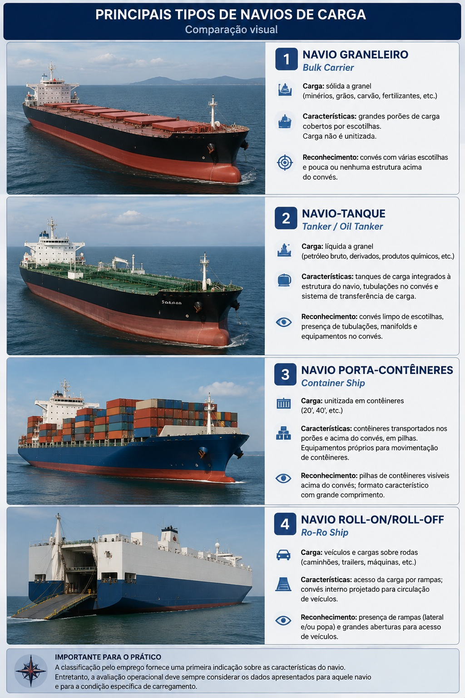
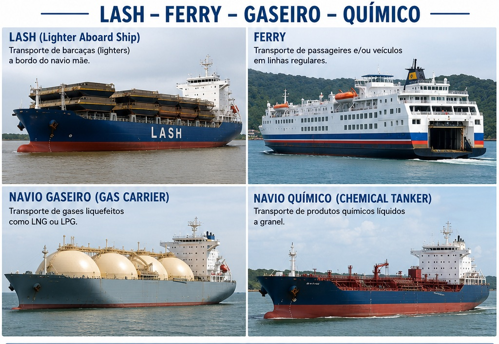

🚢 Tipos e Características dos Navios
Ship Types and Characteristics
Nesta aula serão estudados os principais critérios utilizados para classificar os navios e as características que permitem distinguir diferentes tipos de embarcação.
A classificação será relacionada à finalidade da embarcação, ao serviço executado e às características gerais de sua construção.
Será dada atenção especial aos principais tipos encontrados na Marinha Mercante, desenvolvendo também a capacidade de reconhecimento visual das embarcações.
📊 Progresso da Aula
0% da aula concluída
📘 Identificação da aula
Disciplina: Arte Naval
Assunto: Tipos e Características dos Navios
Termo técnico principal: Ship Types and Characteristics
Nível: PSCPP
⏱ Cronômetro de Estudo
📖 Estudo
Estude com concentração durante o ciclo e utilize a pausa para descansar antes de iniciar uma nova sessão.
📋 Conteúdo programático
II — Arte Naval
Tipos e Características dos Navios
- critérios gerais de classificação dos navios;
- classificação quanto ao emprego;
- navios de guerra e navios mercantes;
- navios de passageiros;
- navios de carga geral;
- navios porta-contêineres;
- navios graneleiros;
- navios-tanque;
- navios roll-on/roll-off;
- outros tipos e navios especializados;
- características gerais e reconhecimento visual dos principais tipos de navios mercantes.
🎯 Objetivos de aprendizagem
Ao concluir esta aula, o aluno deverá ser capaz de:
- compreender os principais critérios utilizados na classificação dos navios;
- distinguir navios segundo sua finalidade e emprego;
- reconhecer os principais tipos de navios mercantes;
- associar características construtivas gerais ao serviço executado pela embarcação;
- diferenciar visualmente os principais tipos de navios;
- reconhecer características externas relevantes à identificação de uma embarcação;
- utilizar corretamente a terminologia técnica marítima em português e inglês;
- relacionar o tipo de navio às características relevantes para sua operação e manobra.
📚 Publicações utilizadas
Arte Naval — Volume 1
Publicação principal utilizada para o estudo da classificação, dos tipos e das características gerais dos navios.
Referência principal: Capítulo 3.
PIANC — Ship Dimensions and Data for Design of Marine Infrastructure
Referência complementar prevista na bibliografia de Arte Naval para informações relacionadas aos tipos, dimensões e características de navios relevantes à infraestrutura marítima.
Trecho indicado na base bibliográfica: Chapters 1 e 2.
Critério bibliográfico da aula
A classificação apresentada pelo Arte Naval será preservada como referência principal.
Quando forem acrescentadas denominações contemporâneas utilizadas na Marinha Mercante, elas serão identificadas claramente como complementação e não serão atribuídas ao Arte Naval quando a publicação não utilizar aquela denominação.
🗂 Organização da aula
- fundamentos da classificação dos navios;
- classificação quanto ao emprego;
- navios de guerra e navios mercantes;
- navios de passageiros e carga;
- porta-contêineres e transporte modular;
- graneleiros;
- navios-tanque;
- navios Ro-Ro e especializados;
- classes usuais da Marinha Mercante contemporânea;
- reconhecimento visual e aplicação operacional.
PARTE 1 — FUNDAMENTOS DA CLASSIFICAÇÃO DOS NAVIOS
Antes de estudar individualmente cada tipo de embarcação, é necessário compreender que os navios podem ser agrupados segundo diferentes critérios.
Uma mesma embarcação pode, portanto, receber diferentes designações dependendo do aspecto utilizado para classificá-la.
Nesta primeira parte será estabelecida a base necessária para posteriormente identificar os principais tipos de navios empregados na atividade marítima.
1. Critérios gerais de classificação
Os navios podem ser classificados segundo diferentes características relacionadas à sua finalidade, ao serviço que executam e às condições em que são empregados.
Por esse motivo, a classificação de um navio não deve ser entendida apenas como a atribuição de um nome ao tipo de embarcação.
Ela permite organizar embarcações que apresentam características ou funções semelhantes.
Ideia fundamental
O critério utilizado determina a classificação.
Assim, uma mesma embarcação pode ser descrita sob diferentes aspectos sem que essas classificações sejam necessariamente contraditórias.
🌐 Termos técnicos
- Ship — navio;
- Vessel — embarcação/navio, conforme o contexto;
- Ship type — tipo de navio;
- Merchant ship — navio mercante;
- Passenger ship — navio de passageiros;
- Cargo ship — navio de carga.
⚓ Aplicação para o Prático
Identificar corretamente o tipo de navio é mais do que uma questão de nomenclatura.
O tipo de embarcação fornece uma primeira indicação de sua configuração geral, distribuição de carga, superestrutura, equipamentos e características operacionais.
Essas informações ajudam a construir uma percepção inicial do navio antes mesmo da análise detalhada de seus dados de manobra.
PARTE 2 — CLASSIFICAÇÃO QUANTO AO EMPREGO
Uma das formas de estudar os diferentes tipos de navios é considerar o emprego para o qual a embarcação é destinada.
Esse critério permite distinguir grandes grupos de navios e, posteriormente, compreender as características próprias das embarcações destinadas ao transporte de passageiros, cargas e outros serviços.
Para o estudo de Arte Naval, essa divisão constitui uma base importante para reconhecer como a finalidade do navio se relaciona com sua configuração.
2. Classificação quanto ao emprego
A finalidade para a qual uma embarcação é construída constitui um dos critérios fundamentais para sua classificação.
Navios destinados a diferentes atividades apresentam características compatíveis com as funções que deverão executar.
Assim, o emprego da embarcação influencia aspectos de sua configuração geral, como a disposição dos espaços internos, a localização da superestrutura, a existência e o tipo dos espaços destinados à carga e os equipamentos instalados a bordo.
Princípio de classificação
A finalidade do navio está diretamente relacionada às características necessárias para que ele execute o serviço para o qual foi projetado.
Por isso, embarcações destinadas a serviços diferentes podem apresentar configurações externas e internas consideravelmente distintas.
🌐 Termos técnicos
- Purpose — finalidade;
- Service — serviço ou emprego;
- Ship type — tipo de navio;
- Cargo ship — navio de carga;
- Passenger ship — navio de passageiros;
- Merchant ship — navio mercante.
⚓ Aplicação operacional
Conhecer o emprego do navio fornece ao Prático uma primeira indicação das características gerais da embarcação que irá receber.
Entretanto, o tipo do navio não substitui a consulta aos dados específicos daquela embarcação.
Dois navios pertencentes à mesma categoria podem apresentar dimensões, calados, configuração, propulsão e características de manobra diferentes.
3. Navios de guerra e navios mercantes
Considerando a natureza geral de seu emprego, uma distinção fundamental pode ser estabelecida entre os navios de guerra e os navios mercantes.
Os navios de guerra são concebidos para atender às necessidades próprias das forças navais e às missões militares para as quais forem destinados.
Os navios mercantes, por sua vez, estão associados às atividades da navegação comercial, particularmente ao transporte marítimo de passageiros e cargas e aos serviços relacionados à atividade marítima.
Navio de guerra
Sua configuração está relacionada à missão naval para a qual foi concebido.
Navio mercante
Sua configuração está fortemente relacionada à natureza do transporte ou do serviço comercial que deverá executar.
É dentro desse grande grupo que encontraremos os tipos de maior interesse para a sequência desta aula.
🌐 Terminologia marítima
- Warship — navio de guerra;
- Merchant ship — navio mercante;
- Merchant vessel — embarcação mercante;
- Merchant fleet — frota mercante;
- Merchant marine — marinha mercante.
⚓ Atenção do Prático
Na praticagem, a identificação do tipo específico de navio mercante tem importância operacional.
Um porta-contêineres, um graneleiro, um navio-tanque ou um Ro-Ro podem possuir configurações bastante distintas.
A identificação visual fornece apenas uma avaliação inicial. O comportamento efetivo da embarcação deverá ser analisado a partir de seus dados próprios, condições de carregamento, calado, trim, propulsão e informações de manobra disponíveis a bordo.
👁️ Reconhecimento dos tipos de navio
A partir da próxima parte, os principais tipos de navios mercantes serão estudados individualmente.
Além da definição e das características apresentadas na bibliografia, serão destacados elementos externos que auxiliem no reconhecimento visual de cada tipo.
Padrão das imagens desta aula
Sempre que a comparação for didaticamente adequada, dois tipos de navio serão apresentados na mesma imagem.
Cada embarcação será identificada claramente como A e B, acompanhada do nome em português e do termo técnico em inglês.
As imagens terão finalidade de reconhecimento visual e permanecerão armazenadas localmente no aplicativo para manter seu funcionamento offline.
PARTE 3 — NAVIOS DE PASSAGEIROS E NAVIOS DE CARGA GERAL
A partir desta parte iniciaremos o estudo dos principais tipos de navios mercantes.
Além de compreender a finalidade de cada tipo, será importante desenvolver a capacidade de reconhecer características externas que auxiliem sua identificação.
Começaremos pelos navios de passageiros e pelos navios de carga geral.
4. Navios de passageiros
Os navios de passageiros (passenger ships) constituem uma categoria de navios cuja finalidade está associada ao transporte de pessoas.
Essa finalidade exerce influência direta sobre a configuração da embarcação, uma vez que parte importante do navio deve ser destinada à acomodação e aos serviços necessários aos passageiros.
Característica fundamental
Ao estudar um navio de passageiros, deve-se relacionar sua configuração à necessidade de transportar e acomodar um número significativo de pessoas.
Isso permite compreender por que sua aparência externa pode ser bastante diferente daquela observada em muitos navios destinados predominantemente ao transporte de carga.
🌐 Termos técnicos
- Passenger ship — navio de passageiros;
- Passenger vessel — embarcação de passageiros;
- Passenger — passageiro;
- Accommodation — acomodações;
- Passenger accommodation — acomodações destinadas aos passageiros.
⚓ Atenção do Prático
A identificação de uma embarcação como navio de passageiros não permite, isoladamente, prever suas características de manobra.
O Prático deverá considerar os dados específicos do navio, incluindo dimensões, calados, condição de carregamento, propulsão, governo e informações de manobrabilidade disponíveis a bordo.
5. Navios de carga geral
Os navios de carga geral são embarcações destinadas ao transporte de cargas que não exigem necessariamente a configuração altamente especializada encontrada em determinados outros tipos de navios mercantes.
Tradicionalmente, o transporte dessas cargas está associado à utilização de espaços próprios para sua estivagem no interior do navio.
Característica fundamental
Enquanto outros navios são construídos para transportar predominantemente uma determinada forma de carga, o cargueiro de carga geral está associado ao transporte de cargas de natureza mais diversificada.
🌐 Termos técnicos
- General cargo ship — navio de carga geral;
- Cargo ship — navio de carga;
- Cargo — carga;
- Cargo hold — porão de carga;
- Hatch — escotilha;
- Hatch cover — tampa de escotilha.
⚓ Aplicação operacional
A disposição da carga e a condição de carregamento influenciam características importantes da embarcação, como calado e trim.
Por isso, mesmo após reconhecer visualmente o tipo do navio, o Prático deverá verificar a condição efetiva da embarcação que irá manobrar.
👁️ Reconhecimento visual

Figura 1 — Comparação visual.
A — Passenger Ship: navio de passageiros.
B — General Cargo Ship: navio de carga geral.
🔎 O que observar
Na embarcação destinada ao transporte de passageiros, observe principalmente a importância visual das áreas destinadas às acomodações e demais espaços relacionados às pessoas transportadas.
No navio de carga geral, observe a configuração relacionada aos espaços destinados ao transporte e ao acesso às cargas.
⚓ Reconhecimento não é identificação absoluta
Características externas permitem ao Prático formular rapidamente uma hipótese sobre o tipo de embarcação.
Entretanto, uma classificação operacional não deve ser baseada exclusivamente na aparência.
Os dados oficiais e as características particulares do navio devem sempre prevalecer.
📌 Síntese da Parte 3
Nesta parte foram apresentados dois grupos importantes de navios mercantes:
- Passenger Ship — associado ao transporte de passageiros;
- General Cargo Ship — associado ao transporte de carga geral.
A finalidade do navio ajuda a explicar diferenças importantes em sua configuração e constitui uma das primeiras informações utilizadas para seu reconhecimento.
PARTE — PRINCIPAIS TIPOS DE NAVIOS DE CARGA
Depois de distinguir os navios destinados ao transporte de passageiros e os navios de carga geral, passaremos aos principais tipos de navios mercantes especializados no transporte de cargas.
A especialização do navio está diretamente relacionada à natureza da carga transportada, ao modo como ela é acondicionada e às operações necessárias para seu carregamento e descarga.
Para o Prático, reconhecer o tipo de navio permite antecipar características importantes da embarcação, como dimensões, disposição do convés, condição de carregamento e particularidades relevantes à operação portuária.
Navios de carga especializados
A evolução do transporte marítimo levou ao desenvolvimento de navios adaptados a determinados tipos de carga.
Entre os tipos particularmente importantes na Marinha Mercante encontram-se:
- navio graneleiro;
- navio-tanque ou petroleiro;
- navio porta-contentores;
- navio roll-on/roll-off.
⚓ Princípio importante
A classificação pelo emprego não significa apenas uma diferença de nome.
O tipo de carga influencia profundamente a configuração do navio, a distribuição dos espaços destinados à carga e os equipamentos utilizados nas operações portuárias.
Navio graneleiro — Bulk Carrier
O navio graneleiro, ou bulk carrier, é destinado principalmente ao transporte de cargas sólidas a granel.
Nesse tipo de transporte, a carga não é acondicionada individualmente em volumes ou contentores, sendo colocada diretamente nos espaços destinados à carga.
Entre as cargas transportadas por navios desse tipo podem estar produtos sólidos a granel, cuja natureza determina diferentes exigências para carregamento, distribuição e descarga.
🌐 Inglês marítimo
- Bulk carrier — navio graneleiro;
- Bulk cargo — carga a granel;
- Cargo hold — porão de carga;
- Hatch — escotilha;
- Hatch cover — tampa de escotilha.
⚓ Aplicação operacional
A condição de carregamento de um graneleiro pode produzir diferenças significativas de calado, deslocamento e resposta do navio.
Por isso, o reconhecimento do tipo de embarcação é apenas o primeiro passo. Na praticagem, devem ser considerados os dados efetivos apresentados para aquele navio e para aquela condição de carregamento.
Navio-tanque — Tanker
O navio-tanque, ou tanker, é concebido para transportar cargas líquidas a granel em tanques que fazem parte da organização interna da embarcação.
Os navios empregados no transporte de petróleo e seus produtos constituem uma das categorias mais conhecidas desse grupo.
A disposição externa do navio apresenta características diferentes das encontradas em navios de carga geral ou graneleiros, refletindo a natureza da carga e o sistema utilizado para sua movimentação.
🌐 Inglês marítimo
- Tanker — navio-tanque;
- Oil tanker — navio petroleiro;
- Cargo tank — tanque de carga;
- Liquid bulk cargo — carga líquida a granel.
⚓ Atenção do Prático
Navios-tanque podem apresentar grandes diferenças entre as condições carregada e em lastro.
Calado, deslocamento, área vélica e comportamento durante a manobra devem ser avaliados conforme a condição real do navio, e não apenas a partir de sua classificação.
Navio porta-contentores — Container Ship
O navio porta-contentores, ou container ship, é especializado no transporte de cargas acondicionadas em contentores.
A utilização de unidades padronizadas permite que a carga seja transferida entre diferentes meios de transporte, constituindo uma característica fundamental do transporte intermodal moderno.
Os contentores podem ser transportados nos espaços de carga e também acima do convés, formando pilhas cuja disposição é uma característica visual marcante desse tipo de navio.
🌐 Inglês marítimo
- Container ship — navio porta-contentores;
- Container — contentor;
- Container stack — pilha de contentores;
- TEU — Twenty-foot Equivalent Unit — unidade equivalente a um contentor de vinte pés.
⚓ Aplicação operacional
A carga transportada acima do convés pode produzir grande área lateral exposta ao vento.
Consequentemente, a condição de carregamento e a ação do vento são informações relevantes durante a avaliação operacional de um porta-contentores.
Navio Roll-on/Roll-off — Ro-Ro
Os navios do tipo roll-on/roll-off, normalmente identificados pela expressão Ro-Ro, são destinados ao transporte de cargas que podem entrar e sair do navio por rolamento.
Essa característica permite a movimentação de veículos e outras cargas sobre rodas através de acessos apropriados entre o navio e o terminal.
🌐 Inglês marítimo
- Roll-on/Roll-off — sistema em que a carga entra e sai do navio por rolamento;
- Ro-Ro — abreviação de roll-on/roll-off;
- Ramp — rampa;
- Vehicle deck — convés destinado a veículos.
🔎 Reconhecimento visual
A presença de rampas e a configuração destinada ao acesso de veículos constituem características importantes para o reconhecimento dessa categoria de embarcação.
🖼 Comparação visual — quatro tipos de navios mercantes

Figura. Comparação visual entre quatro tipos de navios mercantes: Bulk Carrier, Tanker, Container Ship e Ro-Ro Ship.
A figura deve ser utilizada principalmente para reconhecimento visual. A identificação operacional de uma embarcação não deve ser baseada exclusivamente em sua aparência externa.
Comparação dos principais tipos de navios de carga
Uma forma prática de distinguir esses navios é observar a relação entre o tipo de carga e a configuração da embarcação.
- Bulk Carrier: cargas sólidas transportadas a granel;
- Tanker: cargas líquidas transportadas em tanques;
- Container Ship: cargas transportadas em contentores;
- Ro-Ro: cargas que entram e saem do navio por rolamento.
🎯 Ponto de fixação
Não memorize apenas a aparência do navio.
Associe sempre: TIPO DE CARGA → FORMA DE ACONDICIONAMENTO → CONFIGURAÇÃO DO NAVIO → CONSEQUÊNCIAS OPERACIONAIS.
PARTE 5 — OUTROS TIPOS E ESPECIALIZAÇÕES DOS NAVIOS MERCANTES
Além dos principais navios de carga já estudados, o Arte Naval apresenta outros tipos de embarcações mercantes desenvolvidos para atender formas específicas de transporte.
Nesta parte serão estudados os navios LASH, os navios mistos, algumas especializações dos navios-tanque e os navios de pesca.
Também será apresentada a classificação dos navios mercantes conforme as águas em que navegam.
Navio LASH — Lighter Aboard Ship
O Arte Naval apresenta o LASH como uma evolução dos navios de carga modular.
A sigla LASH significa:
Lighter Aboard Ship
A publicação traduz a expressão como Batelão a Bordo de Navio.
Nesse sistema, barcaças ou batelões modulares são transportados pelo navio principal.
Esses módulos podem ser carregados em locais afastados do ponto onde o navio transportador permanece fundeado e posteriormente levados até ele.
O sistema foi concebido para aumentar a agilidade das operações de carga e descarga, bem como a versatilidade do transporte.
⚠ Observação histórica
O próprio Arte Naval registra que esse tipo de navio é pouco usado na atualidade.
Essa observação deve ser mantida, pois ajuda a distinguir uma solução histórica de transporte modular de sistemas hoje muito mais comuns, como os porta-contentores e os Ro-Ro.
🌐 Termos técnicos
- LASH — Lighter Aboard Ship;
- Lighter — barcaça ou batelão;
- Modular cargo — carga modular.
Navios mistos
Os navios mistos são definidos pelo Arte Naval como navios destinados ao transporte simultâneo de carga e passageiros.
A publicação registra que os antigos navios destinados conjuntamente a carga e passageiros caíram em desuso.
Exemplo atual indicado pela publicação
O exemplo mais significativo apresentado pelo Arte Naval é o Ferry Boat / Ro-Ro de passageiros.
Nesse tipo de embarcação, o transporte de passageiros pode ser combinado com o transporte de veículos e outras cargas rolantes.
🌐 Termos técnicos
- Ferry — embarcação destinada ao transporte regular de passageiros e/ou veículos;
- Passenger Ro-Ro — Ro-Ro de passageiros;
- Ro-Pax — denominação contemporânea frequentemente utilizada para navios que combinam transporte Ro-Ro e passageiros.
⚓ Aplicação operacional
A configuração dos ferries pode variar significativamente.
Portanto, a simples identificação do navio como ferry não substitui a análise de suas dimensões, superestrutura, área vélica, sistemas de propulsão e recursos de manobra.
Especializações dos navios-tanque
Dentro da categoria geral dos navios-tanque, o Arte Naval inclui diferentes especializações conforme a natureza da carga líquida transportada.
A publicação menciona:
- navios petroleiros;
- navios gaseiros;
- navios químicos;
- alguns navios especiais destinados ao transporte de sucos e vinho, registrados pela obra como em desuso.
Navio petroleiro — Oil Tanker
Os navios petroleiros constituem uma especialização dos navios-tanque destinada ao transporte de:
- óleo cru;
- derivados de petróleo.
A carga é transportada a granel em tanques próprios da embarcação.
🌐 Termos técnicos
- Oil tanker — navio petroleiro;
- Crude oil — óleo cru;
- Petroleum products — derivados de petróleo.
Navio gaseiro — Gas Carrier
Os navios gaseiros são incluídos pelo Arte Naval entre os navios-tanque especializados.
A publicação cita como exemplos de cargas:
- butano;
- propano;
- gás natural liquefeito.
Identificação da categoria
O aspecto externo de um gaseiro pode diferir bastante do de um petroleiro convencional, em razão das características dos sistemas utilizados para armazenar a carga.
Esse reconhecimento visual será aprofundado na figura comparativa desta parte.
🌐 Termos técnicos
- Gas carrier — navio gaseiro;
- LNG Carrier — navio transportador de gás natural liquefeito;
- LPG Carrier — navio transportador de gases liquefeitos como propano e butano;
- Liquefied Natural Gas — LNG — gás natural liquefeito;
- Liquefied Petroleum Gas — LPG — gás liquefeito de petróleo.
Navio químico — Chemical Tanker
Os navios químicos também são classificados pelo Arte Naval como uma especialização dos navios-tanque.
São destinados ao transporte marítimo de produtos químicos líquidos a granel.
⚠ Segurança da operação
O Arte Naval destaca que as tripulações dos navios-tanque necessitam de formação e certificação especial, devido aos riscos humanos e ambientais envolvidos.
Essa observação é particularmente relevante para petroleiros, gaseiros e navios químicos.
🌐 Termos técnicos
- Chemical tanker — navio químico;
- Chemical cargo — carga química;
- Cargo tank — tanque de carga.
Navios de pesca
Os navios de pesca são embarcações aparelhadas especialmente para a atividade pesqueira.
Segundo o Arte Naval, essas embarcações possuem câmaras frigoríficas destinadas ao acondicionamento do pescado.
🌐 Termos técnicos
- Fishing vessel — embarcação de pesca;
- Fishing ship — navio de pesca;
- Refrigerated hold — porão ou compartimento refrigerado.
🖼 Comparação visual — especializações

Figura. Comparação visual entre: LASH, Passenger Ro-Ro / Ferry, Gas Carrier e Chemical Tanker.
A imagem deverá ser interpretada como apoio ao reconhecimento visual. As configurações reais podem variar significativamente entre navios pertencentes à mesma categoria.
Classificação quanto às águas em que navegam
Além da classificação quanto ao emprego, o Arte Naval classifica os navios mercantes conforme as águas e os tipos de navegação em que operam.
A publicação apresenta quatro grupos principais:
- navios de longo curso;
- navios de cabotagem;
- navios fluviais e de lagos;
- navios de apoio marítimo.
Navios de longo curso
São os navios destinados ao transporte de cargas ou passageiros entre portos de diferentes países.
🌐 Termo técnico
Ocean-going ship — navio destinado à navegação oceânica ou de longo curso.
Navios de cabotagem
São destinados ao transporte de cargas e passageiros entre portos ou cidades de um mesmo país, utilizando a via marítima ou vias navegáveis interiores.
O Arte Naval também registra situações envolvendo países próximos integrados por acordos comerciais, utilizando as expressões:
- grande cabotagem;
- Short Sea Shipping.
🌐 Termos técnicos
- Coastal shipping — navegação costeira / cabotagem;
- Short Sea Shipping — transporte marítimo de curta distância.
Navios fluviais e de lagos
São embarcações utilizadas no transporte entre portos fluviais, caracterizando a navegação interior.
O Arte Naval destaca duas características frequentemente encontradas:
- pequeno calado;
- superestruturas relativamente altas.
⚓ Relação operacional
A redução do calado está diretamente associada à necessidade de operar em vias navegáveis com profundidades mais limitadas.
Navios de apoio marítimo
Segundo o Arte Naval, os navios de apoio marítimo são utilizados no apoio logístico às embarcações e instalações envolvidas na pesquisa ou exploração de minerais e hidrocarbonetos.
🌐 Terminologia
- Offshore support vessel — embarcação de apoio marítimo;
- Offshore — atividade marítima realizada afastada da costa, especialmente associada às instalações de exploração de petróleo e gás.
📌 Síntese da Parte 5
A classificação dos navios mercantes não depende de um único critério.
Um navio pode ser classificado simultaneamente por:
- tipo de carga;
- forma de transporte;
- emprego;
- águas em que navega;
- características construtivas.
O próprio Arte Naval ressalta que pode ser difícil determinar, apenas pela aparência, a qual tipo de construção determinado navio pertence, pois vários requisitos participam dessa classificação.
PARTE 6 — CLASSES DIMENSIONAIS: PANAMAX E NEO-PANAMAX
Além da classificação pelo tipo de carga ou pelo emprego, algumas denominações utilizadas na navegação comercial estão relacionadas às dimensões máximas compatíveis com determinadas infraestruturas marítimas.
Um dos exemplos mais importantes é o Canal do Panamá.
As dimensões das eclusas condicionaram durante décadas o desenvolvimento de navios projetados para utilizar essa rota.
A expansão do canal permitiu a passagem de embarcações significativamente maiores, originando a denominação Neo-Panamax ou New Panamax.
Classes dimensionais de navios
Algumas denominações utilizadas na indústria marítima não identificam diretamente o tipo de carga transportada.
Elas podem indicar que determinadas dimensões do navio foram condicionadas por:
- canais;
- eclusas;
- portos;
- profundidades disponíveis;
- outras restrições de infraestrutura.
Conceito fundamental
Panamax não significa um tipo específico de navio.
A denominação está relacionada às dimensões compatíveis com as limitações das eclusas originais do Canal do Panamá.
Assim, diferentes tipos de navios podem pertencer à classe Panamax.
⚠ Atenção PSCPP
Não confunda:
tipo do navio com classe dimensional.
Um navio pode ser, por exemplo, um porta-contentores quanto ao emprego e simultaneamente ser classificado como Panamax quanto às suas dimensões.
Classe Panamax
A denominação Panamax está historicamente associada às dimensões máximas dos navios capazes de utilizar as eclusas originais do Canal do Panamá.
O Shiphandling for the Mariner — 5th edition apresenta para os navios Panamax os seguintes limites dimensionais:
Dimensões Panamax apresentadas na publicação
- Comprimento: 965 ft;
- Boca: 106 ft;
- Calado: 39,5 ft.
🌐 Termos técnicos
- Panamax — classe dimensional associada às eclusas originais do Canal do Panamá;
- Beam — boca;
- Draft / Draught — calado;
- Lock — eclusa.
⚓ Visão operacional
Em navios dimensionados muito próximos aos limites de uma infraestrutura, as margens disponíveis para manobra podem ser reduzidas.
Para o Prático, isso aumenta a importância do conhecimento preciso da boca, do comprimento, do calado e das restrições locais.
Expansão do Canal do Panamá
O Shiphandling for the Mariner destaca que a construção de novas eclusas produziu impactos importantes sobre o transporte marítimo mundial.
A principal consequência foi permitir a utilização do canal por navios de dimensões significativamente superiores às permitidas pelas eclusas originais.
Isso levou ao desenvolvimento de embarcações projetadas de acordo com os novos parâmetros dimensionais.
Consequência para o projeto naval
O aumento das dimensões disponíveis não modificou apenas a passagem pelo canal.
Ele também teve repercussões sobre:
- dimensões dos navios;
- capacidade de transporte;
- infraestrutura portuária;
- treinamento de Práticos e comandantes;
- emprego de rebocadores;
- simulação de manobras.
Neo-Panamax / New Panamax
Os navios projetados para aproveitar as dimensões das novas eclusas são denominados pela publicação:
Neo-Panamax
ou
New Panamax.
O Shiphandling for the Mariner — 5th edition apresenta as seguintes dimensões máximas para essa nova geração:
Dimensões Neo-Panamax apresentadas na publicação
- Comprimento: 1.200 ft (aproximadamente 366 m);
- Boca: 160,7 ft (aproximadamente 49 m);
- Profundidade/calado de trânsito indicada: 49,9 ft (aproximadamente 15,2 m).
🌐 Terminologia
- Neo-Panamax — denominação utilizada para os navios compatíveis com as novas eclusas;
- New Panamax — denominação equivalente utilizada pela publicação;
- Panama Canal Expansion Project — Projeto de Expansão do Canal do Panamá.
Comparação Panamax × Neo-Panamax
A diferença entre as duas classes pode ser percebida principalmente pelo aumento de:
- comprimento;
- boca;
- calado permitido;
- capacidade potencial de transporte.
Exemplo apresentado pela publicação
Para os porta-contentores, o Shiphandling for the Mariner apresenta aproximadamente:
- Panamax: cerca de 5.000 TEU;
- New Panamax: cerca de 13.000 TEU.
Esses números são utilizados pela publicação como exemplo da diferença de escala entre as duas gerações de navios.
⚓ Consequência para a praticagem
A publicação destaca que os New Panamax, especialmente os porta-contentores, representaram novos desafios para:
- Práticos;
- comandantes;
- mestres de rebocadores;
- autoridades portuárias;
- projetistas de infraestrutura portuária.
A preparação para esses navios incluiu forte utilização de simuladores de manobra.
Impacto do aumento do porte sobre os portos
O aumento das dimensões dos navios exige que a infraestrutura portuária seja avaliada para verificar sua capacidade de receber essas embarcações.
O Shiphandling for the Mariner destaca que autoridades portuárias precisaram avaliar e adaptar instalações para permanecer capazes de atender aos navios de nova geração.
Aspectos afetados
- acessos náuticos;
- áreas de manobra;
- instalações portuárias;
- assistência de rebocadores;
- treinamento de pessoal;
- procedimentos de manobra.
⚓ Relação navio–porto
O aumento do porte do navio não pode ser analisado isoladamente.
Existe uma relação direta entre:
DIMENSÕES DO NAVIO → RESTRIÇÕES DO ACESSO → INFRAESTRUTURA PORTUÁRIA → RECURSOS DE MANOBRA
Simulação e treinamento para grandes navios
O Shiphandling for the Mariner destaca a importância dos simuladores na preparação para a entrada em serviço dos navios Neo-Panamax.
A simulação foi utilizada para:
- treinar Práticos e oficiais;
- treinar tripulações de rebocadores;
- avaliar instalações portuárias existentes;
- testar a capacidade dos portos;
- apoiar projetos de novas instalações;
- estudar modificações em instalações existentes.
Aplicação para o Bridge Trainer
Este é exatamente o princípio que será aplicado posteriormente no módulo de simulações:
conhecer o navio + conhecer a restrição + antecipar a resposta antes da manobra real.
🖼 Figura comparativa — gerar ao final da aula
Ao final da aula será produzida uma figura vertical comparando visualmente:
- Panamax;
- Neo-Panamax / New Panamax;
- as diferenças de comprimento;
- as diferenças de boca;
- as diferenças de calado;
- a diferença aproximada de capacidade dos porta-contentores apresentada pela publicação.
A figura será salva posteriormente na pasta:
docs/img/arte-naval/tipos-navio/
⚠ Limite bibliográfico desta Parte 6
Nesta parte foram incluídas apenas as classes dimensionais encontradas de forma suficientemente clara nas publicações disponíveis:
- Panamax;
- Neo-Panamax / New Panamax.
Classes como Handysize, Handymax, Aframax, Suezmax, Capesize, VLCC e ULCC não serão definidas aqui apenas com base em conhecimento geral.
Elas somente serão acrescentadas à aula quando houver suporte suficiente nas publicações utilizadas.
PARTE 7 — CARACTERÍSTICAS DOS NAVIOS E REPERCUSSÕES OPERACIONAIS
O reconhecimento do tipo de navio constitui apenas o primeiro passo para sua avaliação.
Para a condução da embarcação, é necessário relacionar sua finalidade e sua configuração com características como:
- dimensões principais;
- distribuição da superestrutura;
- área vélica;
- condição de carregamento;
- calado;
- trim;
- posição e características dos equipamentos de convés;
- características próprias do sistema de propulsão e governo.
Esses elementos ajudam a compreender por que navios de diferentes tipos podem apresentar comportamentos operacionais bastante distintos.
Identificação visual do tipo de navio
Muitos tipos de navios apresentam características externas que permitem uma primeira identificação de sua finalidade.
Entre os elementos que podem auxiliar nesse reconhecimento estão:
- forma geral do casco;
- posição da superestrutura;
- existência e disposição das escotilhas;
- presença de tubulações no convés;
- presença de contêineres;
- rampas de carga;
- equipamentos especializados de movimentação de carga;
- configuração geral dos conveses.
Reconhecimento inicial
A aparência externa do navio frequentemente fornece indicações importantes sobre sua finalidade.
Por exemplo:
- grandes escotilhas sucessivas podem indicar um navio destinado ao transporte de carga sólida a granel;
- extensa rede de tubulações no convés é característica importante dos navios-tanque;
- pilhas de contêineres permitem reconhecer rapidamente um porta-contentores;
- rampas constituem característica marcante dos navios do tipo Ro-Ro.
⚠ Atenção do Prático
O reconhecimento visual não substitui as informações oficiais do navio.
A identificação do tipo fornece apenas uma primeira indicação de suas características.
A avaliação operacional deve considerar os dados efetivos daquela embarcação e sua condição específica de carregamento.
Distribuição da superestrutura
A disposição das construções acima do convés varia significativamente entre diferentes tipos de navios.
Essa característica é importante tanto para o reconhecimento da embarcação quanto para a interpretação de sua geometria externa.
Navios de passageiros, por exemplo, podem apresentar grande volume de construções acima do convés principal.
Em outros navios mercantes, grande parte do comprimento disponível é destinada aos espaços de carga, ficando a superestrutura concentrada em determinada região do navio.
🌐 Termos técnicos
- Superstructure — superestrutura;
- Main deck — convés principal;
- Accommodation — área destinada às acomodações;
- Bridge — passadiço;
- Deckhouse — casaria.
Área exposta ao vento
A configuração das obras mortas e da carga transportada acima do convés determina parte importante da área do navio exposta à ação do vento.
Essa área pode variar significativamente entre diferentes tipos de embarcação e também entre diferentes condições de carregamento do mesmo navio.
Exemplos importantes
Um porta-contentores carregado pode apresentar grande área lateral devido às pilhas de contêineres acima do convés.
Navios de passageiros também podem apresentar grande área exposta ao vento em razão do desenvolvimento de suas superestruturas.
⚓ Aplicação operacional
Quanto maior a superfície exposta ao vento, maior pode ser a importância das forças aerodinâmicas durante operações em baixa velocidade.
Essa característica merece especial atenção durante:
- aproximação ao cais;
- desatracação;
- manobras em baixa velocidade;
- períodos com pequena eficiência hidrodinâmica do leme;
- operações em áreas portuárias restritas.
Condição de carregamento
O tipo do navio não determina sozinho sua condição operacional.
A mesma embarcação pode apresentar diferenças importantes entre uma condição carregada e uma condição de menor carregamento.
Essas alterações estão relacionadas, entre outros fatores, às mudanças de:
- deslocamento;
- calado;
- trim;
- área exposta ao vento;
- posição vertical e longitudinal dos pesos.
🌐 Termos técnicos
- Loaded condition — condição carregada;
- Ballast condition — condição de lastro;
- Draft / Draught — calado;
- Trim — diferença entre os calados de vante e de ré;
- Displacement — deslocamento.
⚠ Atenção do Prático
Dois navios do mesmo tipo não devem ser considerados operacionalmente idênticos.
Da mesma forma, o mesmo navio pode apresentar comportamento diferente quando muda sua condição de carregamento.
Por isso, a classificação estudada nesta aula deve ser sempre complementada pelos dados particulares do navio.
Dimensões principais e operação
O porte de um navio não deve ser avaliado por apenas uma dimensão.
Para compreender sua relação com a infraestrutura e com o espaço disponível para a navegação, devem ser considerados conjuntamente os principais parâmetros dimensionais.
Dimensões fundamentais
- Length — comprimento;
- Beam / Breadth — boca;
- Draft / Draught — calado;
- Depth — pontal.
Cada uma dessas dimensões pode representar uma restrição diferente.
O comprimento está relacionado, entre outros aspectos, ao espaço longitudinal ocupado pelo navio.
A boca torna-se especialmente importante quando existem limitações laterais.
O calado deve ser comparado com a profundidade disponível e com a Under Keel Clearance — UKC.
⚓ Aplicação operacional
Uma embarcação pode ser aceitável para determinado porto quanto ao comprimento, mas encontrar restrições relacionadas à boca ou ao calado.
Portanto, a expressão "navio grande" é insuficiente para uma avaliação operacional.
É necessário conhecer suas dimensões efetivas e compará-las às características da via navegável e das instalações utilizadas.
Tipo de navio e comportamento operacional
Conhecer o tipo da embarcação permite formular uma expectativa inicial sobre determinadas características físicas do navio.
Entretanto, essa informação não permite determinar, isoladamente, como a embarcação responderá durante uma manobra.
A resposta real dependerá das características específicas daquele navio e de sua condição operacional.
Sequência de avaliação
TIPO DO NAVIO → CARACTERÍSTICAS GERAIS → DADOS DO NAVIO → CONDIÇÃO DE CARREGAMENTO → CONDIÇÕES AMBIENTAIS → COMPORTAMENTO OPERACIONAL
⚓ Princípio para a praticagem
A classificação permite reconhecer o que o navio é.
Os dados particulares permitem compreender qual navio será efetivamente manobrado.
Essa distinção é fundamental.
Síntese das classificações estudadas
Ao longo desta aula, os navios foram examinados por diferentes critérios de classificação.
1 — Quanto à finalidade ou emprego
Permite distinguir embarcações destinadas, por exemplo, ao transporte de passageiros, cargas ou serviços especializados.
2 — Quanto à natureza e forma de transporte da carga
Permite distinguir configurações como:
- navios de carga geral;
- graneleiros;
- navios-tanque;
- porta-contentores;
- Ro-Ro;
- outros navios especializados estudados nas partes anteriores.
3 — Quanto às limitações dimensionais
Determinadas denominações estão relacionadas à compatibilidade dimensional com infraestruturas específicas.
Nesta aula foram examinadas:
- Panamax;
- Neo-Panamax / New Panamax.
⚠ Não misture os critérios
Uma mesma embarcação pode receber classificações diferentes simultaneamente porque cada denominação pode responder a uma pergunta diferente.
Por exemplo:
"Porta-contentores" indica sua configuração para transporte de carga.
"Neo-Panamax" pode indicar sua classe dimensional.
As duas denominações, portanto, não são concorrentes.
Visão do Prático
Para o Prático, o objetivo do estudo dos tipos de navios não é apenas memorizar denominações.
O reconhecimento do tipo de embarcação deve servir como ponto de partida para uma avaliação mais ampla do navio.
Ao receber um navio
A identificação da classe ou do tipo deve conduzir à análise das características efetivamente relevantes para a manobra.
- Qual é o comprimento?
- Qual é a boca?
- Qual é o calado?
- Qual é o trim?
- Qual é a condição de carregamento?
- Qual é a área exposta ao vento?
- Quais são as características de propulsão?
- Quais são os recursos de governo e manobra disponíveis?
⚓ Ideia central da Parte 7
A classe do navio orienta a análise. Os dados particulares determinam a avaliação.